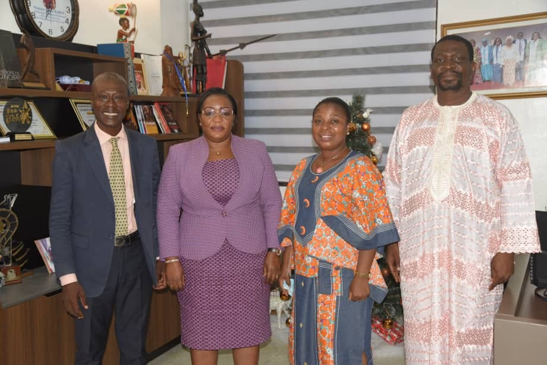

LE MOT DE L'EXPERT
Bonjour, un jour nouveau s'élève pour le Cntcc, le célèbre écrivain victor Hugo disait " le Théâtre est une tribune, le Théâtre est une chaire, le Théâtre, parle haut, le Théâtre parle fort" Utilisons cette Tribune d'expression pour communiquer, audience de travail avec l'ex ministre de la culture et de la francophonie
